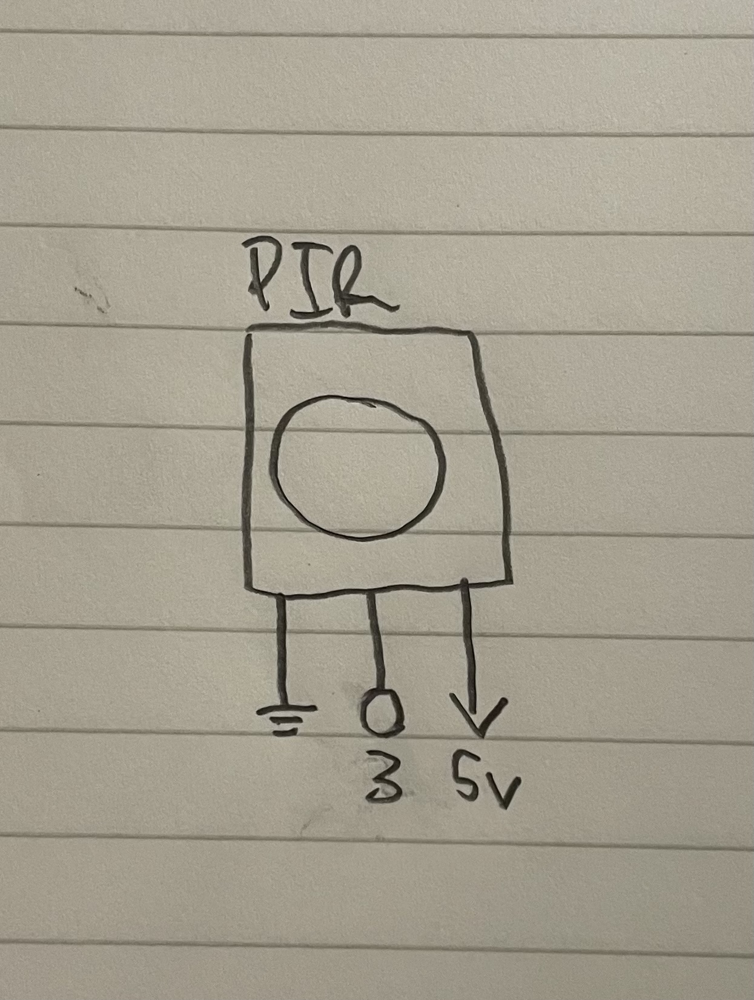

For my final project, I decided to create a bird sensor device that senses when a hummingbird is at the
feeder and alerts the user, documenting the time of detection. I began by connecting my sensor to my Arduino
and programming it to print "MOTION" when it detects motion. Next, I programmed the web side by using p5.js
and p5.sound, and had my website receive the signal from the Arduino, output a tweet sound, and display the
time of motion detected. Finally, I 3D printed the shell by editing an existing stl file and adjusting the
dimensions to fit my project.
Below, I have include my schematic, firmware, my website's code, and my circuits operations.
Schematic

Firmware
// Hummingbird Motion Detector
// PIR sensor on Digital Pin 3
// Sends "MOTION" over Serial when triggered
// Define which pin the PIR sensor signal wire is connected to
const int PIR_PIN = 3;
// How many milliseconds to wait before detecting again (30 seconds)
const int COOLDOWN_MS = 30000;
// Setup runs once when the Arduino powers on
void setup() {
// Set the PIR pin as an input so we can read from it
pinMode(PIR_PIN, INPUT);
// Start serial communication
Serial.begin(9600);
// Send a startup message to confirm the Arduino is ready
Serial.println("Hummingbird Detector Ready");
// Wait 2 seconds for the PIR sensor to calibrate itself on startup
delay(2000);
}
// Loop runs over and over forever after setup finishes
void loop() {
// Read the current state of the PIR sensor (HIGH = motion, LOW = no motion)
int pirState = digitalRead(PIR_PIN);
// Only trigger if the PIR sensor sees motion
if (pirState == HIGH) {
// Send the trigger word to the laptop over USB serial
Serial.println("MOTION");
// Wait for the cooldown period before checking again
delay(COOLDOWN_MS);
}
}
Website code
<!DOCTYPE html>
<html lang="en">
<head>
<!-- Set the character encoding for the page -->
<meta charset="UTF-8">
<!-- Set the page title shown in the browser tab -->
<title>Tweet and Greet!</title>
<!-- Load the p5.js library -->
<script src="https://cdnjs.cloudflare.com/ajax/libs/p5.js/1.9.0/p5.min.js"></script>
<!-- Load the p5.sound library -->
<script src="https://cdnjs.cloudflare.com/ajax/libs/p5.js/1.9.0/addons/p5.sound.min.js"></script>
<style>
/* Remove default margin and hide scrollbar */
body {
margin: 0;
overflow: hidden;
font-family: Arial, sans-serif;
background-color: #1a2e1a;
}
/* Style the UI overlay on top of the canvas */
#ui {
position: absolute;
top: 0;
left: 0;
width: 100%;
display: flex;
flex-direction: column;
align-items: center;
padding-top: 20px;
color: #90ee90;
pointer-events: none;
}
/* Style the main title text */
h1 {
font-size: 2rem;
margin: 0 0 10px 0;
}
/* Style the status message box */
#status {
font-size: 1.1rem;
padding: 8px 18px;
border: 2px solid #90ee90;
border-radius: 10px;
background-color: #0f1f0f;
margin-bottom: 12px;
}
/* Allow the connect button to receive clicks through the overlay */
#connectBtn {
pointer-events: all;
padding: 10px 24px;
font-size: 1rem;
background-color: #2e6b2e;
color: white;
border: none;
border-radius: 8px;
cursor: pointer;
}
/* Darken button on hover */
#connectBtn:hover {
background-color: #3d8b3d;
}
/* Style the detection log box */
#log {
pointer-events: all;
margin-top: 12px;
width: 380px;
height: 160px;
background-color: #0f1f0f;
border: 1px solid #90ee90;
border-radius: 8px;
padding: 10px;
overflow-y: auto;
font-size: 0.85rem;
color: #90ee90;
}
/* Style each individual log entry */
.log-entry {
padding: 3px 0;
border-bottom: 1px solid #2e4a2e;
}
</style>
</head>
<body>
<!-- UI overlay sitting on top of the canvas -->
<div id="ui">
<!-- Main heading -->
<h1>Hummingbird Detector</h1>
<!-- Status message box -->
<div id="status">Not connected. Click below to connect to Arduino.</div>
<!-- Connect button -->
<button id="connectBtn" onclick="connectToArduino()">Connect to Arduino</button>
<!-- Detection log -->
<div id="log"></div>
</div>
<script>
// Store the loaded tweet sound
let tweetSound;
// Store the serial port object so it can be closed later if needed
let port;
// Store the serial port reader to read data from it
let reader;
// preload runs before setup and loads all assets including sounds
function preload() {
// Load the bird sound file
tweetSound = loadSound("birdsound.mp3",
// Callback if the sound loads successfully
() => console.log("Sound loaded successfully"),
// Callback if the sound fails to load
() => console.log("Sound failed to load - check birdsound.mp3 is in the same folder")
);
}
// Setup runs once when p5 starts
function setup() {
// Create a canvas that fills the window
createCanvas(windowWidth, windowHeight);
}
// Draw runs every frame
function draw() {
// Fill the background with dark green
background(26, 46, 26);
}
// Resize the canvas if the browser window is resized
function windowResized() {
resizeCanvas(windowWidth, windowHeight);
}
// This function plays the loaded tweet sound
function playTweet() {
// Check the sound is loaded before trying to play it
if (tweetSound && tweetSound.isLoaded()) {
// Resume the audio context in case the browser has blocked it
getAudioContext().resume().then(() => {
// Play the bird sound once the audio context is running
tweetSound.play();
});
} else {
// Log a warning if the sound is not ready yet
console.log("Sound not ready yet");
}
}
// This function connects to the Arduino using the Web Serial API
async function connectToArduino() {
// Check if the browser supports the Web Serial API
if (!navigator.serial) {
// Alert the user if their browser does not support Web Serial
alert("Web Serial not supported. Please use Google Chrome or Microsoft Edge.");
return;
}
try {
// Resume the audio context on the user gesture of clicking the button
await getAudioContext().resume();
// Ask the user to pick a serial port
port = await navigator.serial.requestPort();
// Open the port at 9600 baud to match the Arduino sketch
await port.open({ baudRate: 9600 });
// Update the status box to show it's connected
document.getElementById("status").textContent = "Connected! Waiting for hummingbird...";
// Start reading data coming in from the Arduino
readFromArduino();
} catch (err) {
// If user cancels or something goes wrong, show the error
document.getElementById("status").textContent = "Connection failed: " + err.message;
}
}
// This function continuously reads lines sent from the Arduino
async function readFromArduino() {
// Create a text decoder to convert raw bytes into readable text
const decoder = new TextDecoderStream();
// Pipe the serial port's incoming data through the text decoder
port.readable.pipeTo(decoder.writable);
// Get a reader to read the decoded text line by line
reader = decoder.readable.getReader();
// Buffer to build up characters into a complete line
let buffer = "";
// Keep looping forever to continuously read incoming data
while (true) {
try {
// Read the next chunk of text from the Arduino
const { value, done } = await reader.read();
// If the stream is closed, stop reading
if (done) break;
// Add the new characters to the buffer
buffer += value;
// Check if there is a complete line ending with a newline character
if (buffer.includes("\n")) {
// Split the buffer into individual lines
const lines = buffer.split("\n");
// Loop through all complete lines except the last unfinished one
for (let i = 0; i < lines.length - 1; i++) {
// Clean up whitespace and carriage returns from the line
const line = lines[i].trim();
// Only process non empty lines
if (line) {
// Pass the complete line to the handler function
handleLine(line);
}
}
// Keep the leftover incomplete line in the buffer for next time
buffer = lines[lines.length - 1];
}
} catch (err) {
// Log any read errors but keep the loop running
console.log("Read error, continuing: " + err.message);
// Clear the buffer on error so we start fresh
buffer = "";
}
}
}
// This function decides what to do with each line received from Arduino
function handleLine(line) {
// Print the raw line to the browser console for debugging
console.log("Arduino says:", line);
// Check if the line is the motion trigger word
if (line === "MOTION") {
// Update the status box to show a bird was detected
document.getElementById("status").textContent = "Hummingbird detected!";
// Play the tweet sound
playTweet();
// Add a timestamped entry to the detection log
addLog("Hummingbird detected!");
// Reset the status message after 3 seconds
setTimeout(() => {
document.getElementById("status").textContent = "Connected! Waiting for hummingbird...";
}, 3000);
}
}
// This function adds a new entry to the on-screen detection log
function addLog(message) {
// Get the log container element from the page
const log = document.getElementById("log");
// Create a new div element for this log entry
const entry = document.createElement("div");
// Add the log-entry CSS class to style it
entry.className = "log-entry";
// Use time functions to get the current hour, minute, and second
const time = hour() + ":" + nf(minute(), 2) + ":" + nf(second(), 2);
// Set the text of the entry to include the time and message
entry.textContent = "[" + time + "] " + message;
// Add the new entry to the top of the log box
log.prepend(entry);
}
</script>
</body>
</html>